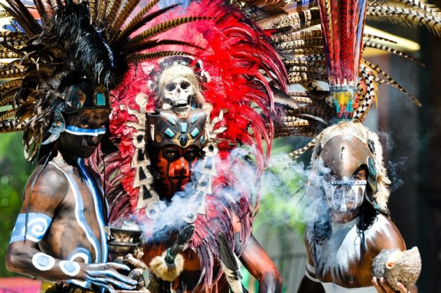
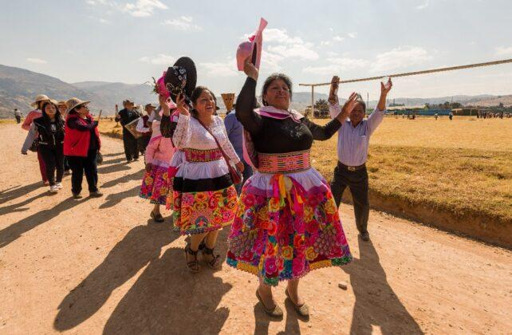

COLIMA!!!, La danza del gallito!. Este baile viene de la tradición de exhibir a los gallos antes de hacerlos
pelear.
Se trata de una danza realmente simple donde los participantes (hombres y mujeres) llevan ropas brillantes y
zapatos de madera para zapatear contra el suelo.
Los bailarines imitan el movimiento de los gallos al raspar el suelo con los pies (produciendo ruido para ampliar
el efecto) y mover el cuello como si se retaran el uno al otro. También puede observarse como un duelo de baile,
ya que los participantes compiten por los aplausos del público.
DANZA DE LOS MORENOS: Exclusivo del pueblo de Suchitlán, es un baile tradicional de naturaleza religiosa donde
los bailarines se disfrazan de animales con máscaras artesanales especialmente diseñadas para la ocasión y brindan
una representación teatral del arca de Noé.

LOS APACHES: También llamada danza de San Bartolomé, es realizada en honor a San Bartolomé mediante la
representación de la guerra entre mexicanos y franceses del año 1862.
Durante la danza los contendientes del bando mexicano bailan pidiendo a Dios suerte en la batalla.

LA MALINCHE: La Malinche puede interpretarse con una connotación de tipo mágica, ya que se basa en rituales de
adoración a Pijchal, la Serpiente de los Siete Colores. Es interpretada por 14 personas que representan los 7 días
de la semana junto con sus 7 noches.
En el ritual original, se pedía consejo y guía a Pijchal sobre diversos temas de índole social. El baile actual es
acompañado por tres personas que tocan música, los bailarines se forman en fila y efectúan pasos imitando el
ritual auténtico.
BAILE
VIDEO
ÉPOCA DEL AÑO
La danza del gallito
Esta danza es una expresión cultural típica de la región de Colima. Puede realizarse durante festivales
folclóricos, ferias o fiestas patronales que se celebren en diferentes meses del año. Los eventos culturales y
las festividades locales suelen ser oportunidades comunes para la presentación de esta danza tradicional.
Danza de los morenos
La "Danza de los Morenos" es una danza que representa la mezcla de culturas indígenas y españolas en
México. Puede realizarse durante festividades religiosas, como las celebraciones en honor a algún santo
patrono, o durante eventos culturales que promueven la diversidad étnica y la identidad regional.
Los apaches
Esta danza es una representación cultural de los indígenas apaches en la región. Puede presentarse durante
festivales folclóricos, eventos culturales o celebraciones que destaquen la herencia indígena y la historia de
la región.
La malinche
La "Danza de la Malinche" es una danza que homenajea a la figura histórica de La Malinche, una mujer
indígena que sirvió como intérprete y consejera de Hernán Cortés durante la conquista de México. Esta danza
puede realizarse durante eventos culturales que conmemoren la historia y la identidad mexicana, o durante
festividades locales que honren a figuras históricas importantes.